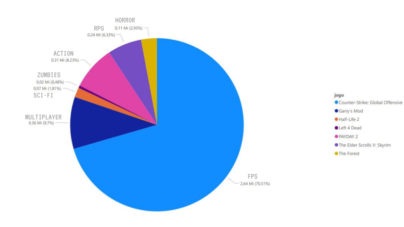

• Todos os temas de jogos, ordenados por melhores avaliações.
• Avaliação de temas mais famosos e o jogo com melhor avaliação entre eles.
Clique na estatística desejada e veja o que desejar.
Voltar ao mapa
Todos os temas de jogos, ordenados por melhores avaliações
×
Avaliação de temas mais famosos e o jogo com melhor avaliação entre eles
×
